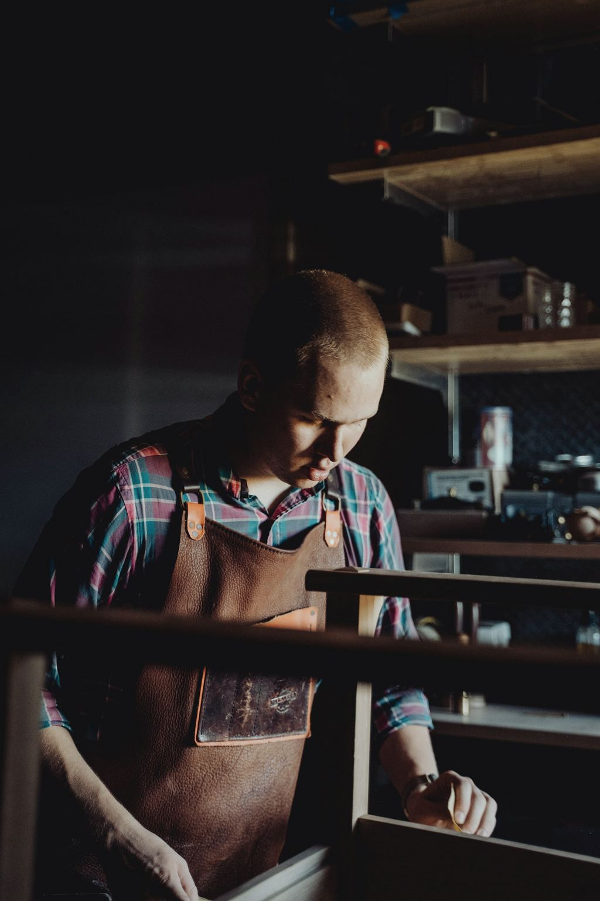
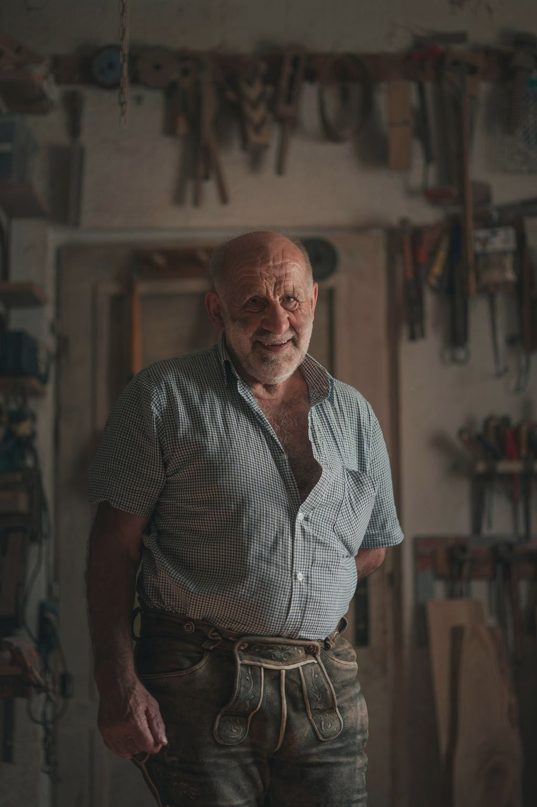
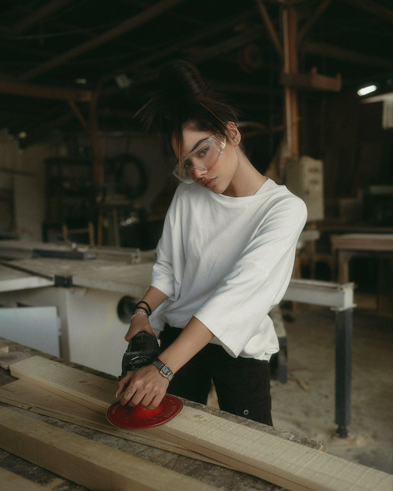

Franz Hallwirth
Tischlermeister, Inhaber seit 2019
Hat 2008 bei seinem Vater ausgelernt und 2012 die Meisterprüfung gemacht. Plant die Küchen und Einbauten, kommt zu den meisten Aufmaß-Terminen selbst.
Demo-Website. Die Tischlerei Hallwirth gibt es nicht: Namen, Adresse, Telefonnummer und Aufträge sind erfunden. Worum es geht
Josef Hallwirth hat die Tischlerei in einem ehemaligen Pferdestall in der Hobelgasse eröffnet. Heute führt sie sein Enkel Franz, mit acht Leuten und im selben Hof.

Die Jahre, in denen sich in der Werkstatt etwas geändert hat.
Mit einer Hobelbank, einer Bandsäge und einem Lehrling. Die ersten Aufträge: Kästen und Fenster für die neuen Siedlungen in Atzgersdorf.
Josef kauft das Nachbargrundstück. Seitdem trocknet unser Holz zwei bis drei Jahre im eigenen Lager, bevor es verarbeitet wird.
Mit ihm kommen die Küchen dazu, und die Restaurierung, die er bis heute macht.
Vier Jahre nach seinem Lehrabschluss im eigenen Betrieb.
Peter bleibt drei Tage die Woche in der Werkstatt. Seitdem zeichnen wir jeden Plan digital und drucken ihn zur Freigabe aus.
Jonas Brandl hat im September angefangen, Emine Kaya ist im dritten Lehrjahr.
Auch den einfachen Kasten. Der Plan ist die Abmachung zwischen Ihnen und uns.
Massivholz, Furnier, Tischlerplatte: im Angebot steht es bei jedem Teil.
Wer in der Werkstatt gebaut hat, baut bei Ihnen auch ein und kennt den Plan schon.
Auch nach dreißig Jahren. Die Pläne liegen im Archiv.
Acht Leute. Die drei hier sehen Sie am wahrscheinlichsten: beim Aufmaß, beim Plan oder mit einem alten Möbel in der Werkstatt.

Tischlermeister, Inhaber seit 2019
Hat 2008 bei seinem Vater ausgelernt und 2012 die Meisterprüfung gemacht. Plant die Küchen und Einbauten, kommt zu den meisten Aufmaß-Terminen selbst.

Tischlermeister, Restaurierung
Hat die Tischlerei 1989 von seinem Vater übernommen und 2019 an Franz weitergegeben. Seitdem ist er drei Tage die Woche in der Werkstatt und kümmert sich um alles, was älter ist als er.

Tischlerin, Aufmaß und Planung
Hat bei uns gelernt, Lehrabschluss 2021. Zeichnet die Pläne, die Sie zur Freigabe bekommen, und kennt jeden Auftrag vom ersten Maß bis zur Montage.
Außerdem in der Werkstatt: Marko Petrović (Tischler, leitet die Montage), Stefan Wöhrer (Tischler, Oberflächen und Lack), Sabine Hallwirth (Büro, Angebote und Termine), Emine Kaya (Lehrling, 3. Jahr) und Jonas Brandl (Lehrling, 1. Jahr).
Die Porträts sind Symbolfotos von Unsplash. Auf einer echten Website stehen hier Fotos der echten Menschen.
Bevor Tischler Bretter zu einer Platte verleimen, zeichnen sie ein großes Dreieck darüber. Ist alles zerlegt, zeigt jedes Brett mit seinem Stück Dreieck, wohin es gehört und wie herum. So markieren wir seit 1962, deshalb steht es auch auf unserem Tor.
Sie sprechen mit Franz Hallwirth oder Lena Hofer, Montag bis Freitag von 7:30 bis 16:30 Uhr. Stehen wir gerade an der Maschine, rufen wir am selben Tag zurück.